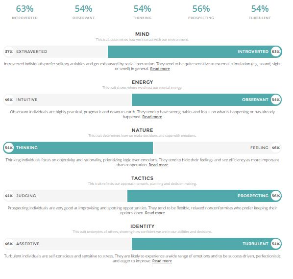
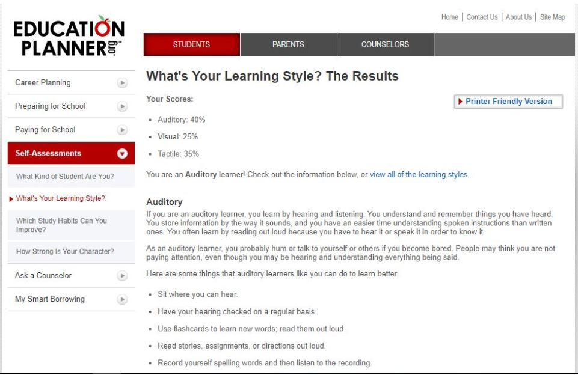
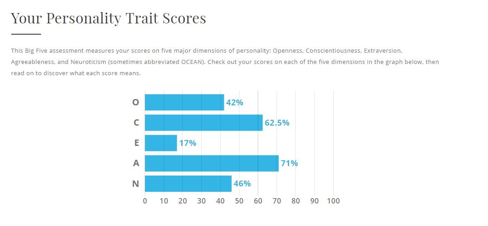
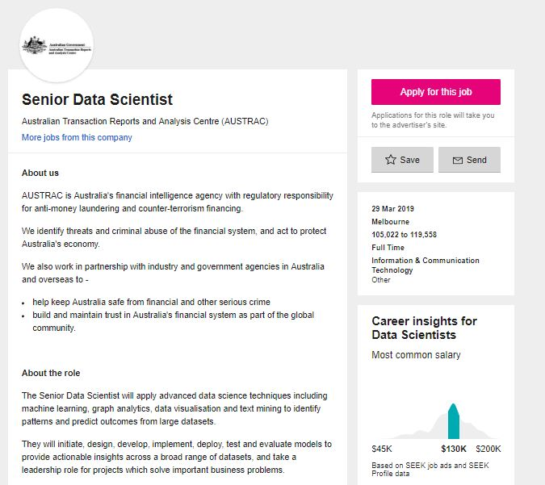
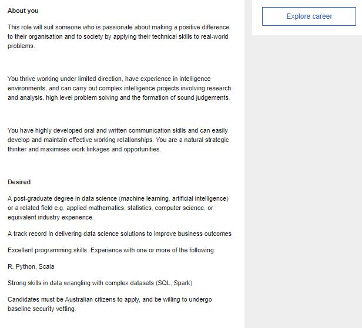

Personal Information
My name is Matthew Sesto and I currently study I.T at RMIT University City Campus. I come from a heavily Croatian background with most my family having some Croatian in their blood. I can only speak partial Croatian but obviously fluent English. My hobbies include and are mostly sports related but to branch out to gaming as well. Soccer however is my main passion and I’ve been playing it ever since I could remember. I support Liverpool Football Club who play in the English Premier League. I currently play at St Albans Saints Soccer Club and have been doing so for the past 3 years. An interesting fact about myself would probably have to be that I was selected once to trial for Melbourne City’s academy side, unfortunately unsuccessful but still rather interesting and something not many people know about myself.
Interest in IT
My interest’s with-in the IT world don’t just stop at one field, they branch out into the never ending future possibilities that IT must offer. For all I know my main interest may not even be thought of yet. Currently though there are fields that I’m mainly interested in, the first being programming and the second being statistics. I enjoy programming because it allows me just to be creative and to create anything I really want to as well as the opportunity to challenge myself as there is so much to coding that I still need to learn. On the other hand, I enjoy statistics as I really enjoy keeping a track of them especially sports statistics as the amount of data generated is quite fascinating, that was probably where my interest for IT started because as a kid the only way I could see these statistics was through the internet and the use of IT which led to me enjoying it at school and now eventually to here.
I choose to attend RMIT University for several reasons, firstly, I live rather close to Watergardens train station so it’s very easy for me to make my way to university, 1 train ride for 35 minutes and I’m there much easy than attending another technology university such as Swinburne where I would have to take multiple trains just to attend. Secondly, I know many people who are currently attending or have attended RMIT in the past and they all have had good things to say about the university which further persuaded me to a come to RMIT. Lastly, RMIT has a very good reputation in terms of their school of science and as IT falls under that category, I knew I was making the right decision in choosing it as my first preference and sure enough, I got in.
I expect to learn multiple skills during my studies which will hopefully help me in finding and maintaining a job in the foreseeable future. Firstly, I would like to know how to code rather well considering I only know some basics plus a couple more things currently such as arrays and interface. I would also like to learn the ins and outs of databases and I think I could help me greatly in terms of having skills that employers might need. In general though apart from those two reasons I’d like to learn anything which gives me an advantages of somebody else in the future which would lead to me getting the job over that person.
Personal Profile
  The results of these tests personally to me don’t mean much at all, there just questions with basic answers, I can’t predict what or how ill react/interact with future circumstances. These tests just provide number’s and stats and when it comes to personalities and learning, it changes based on my surroundings. Yes they do give a general representation of my personality however aren’t something that should be considered when judging somebody’s general character.
With-in a team environment, these results will have little to no impact in my opinion. Working in a team we have a shared objective and our combined strengths regardless of any type of personality will work together to achieve our goal. If anything, these results will help drive me to break out of my comfort zone and become more involved in helping make key decisions with our team.
Similarly, to what was said above, I think with-in a team you need different personalities to work cohesively as a unit. So, when forming a group or a team I would like for there to be 1 or 2 maximum people who shared similar personality and learning traits to me as even though we would probably get along quite well if the whole group was similar, our work with-in the team would probably be less efficient as we would spend more time socialising with our shared interests rather than effectively working to the best of our abilities.Therefore, summarising what has already been said, I think u need multiple different personalities when forming the most efficient and effective team possible.
My Ideal Job
  https://www.seek.com.au/job/38692371?searchrequesttoken=49300601-b4a0-4c44-ab4d-739ac0bf0fa9&type=standoutMy current ideal job is to be a senior data scientist for the Australian Transaction reports and Analysis centre. This job requires me to apply my future advanced IT knowledge to graph analytics, identify patterns and predict outcomes from large datasets alongside more in depth data visualisation and machine learning. This positon is appealing to me because it covers both aspects of I.T that I’m passionate about, statistics and coding.
The skills/experience/qualifications required for this job are a track record in proving business outcomes using previous data science solutions, in depth programming knowledge on either Python or Scala, strong knowledge in datasets using software such as SQL and Spark alongside also being an Australian Citizen.
The current skills I have are a basic understanding of the code language’s Java and HTML with a lot experience using java. No knowledge on the required code languages. I have worked briefly with datasets using SQL and other software’s however not with Spark. I’m currently also an Australian citizen so I meet that criteria.
To achieve the required skills and qualifications needed I plan to use my prior coding knowledge to help me learn the Python and Scala Code languages alongside using my prior datasets knowledge to understand how to use SQL and Spark in depth. Also, I plan to discover and research data science solution’s to further my knowledge on the subject to in the future complete and master this skill.
Project Idea
My project idea is to create a software which would act as customisable league table/fixture list. It would allow the user to first enter in the number of teams in a specific league, whether it is sport related or not, the teams with-in the league, the number of rounds, if it’s a straight knockout or league table format league, and just any other specific requirements the user would want for their competition. After gathering all the knowledge, it would autogenerate a competition for the teams which then allows the user to enter in the scores which the app either puts into an onscreen live league table or in storage for future use.
This project will be interesting as its rather unique, personally, I’ve looked for apps like the one I described above however have come up unsuccessful so this app allows for someone like me to utilise it whether for self-pleasure or business use. Alongside this, continuing on the business side of things, sporting brands such as the FFV (Football Federation Victoria) or the AFL could easily utilise the app to make their life easier when designing fixtures or storing general information about the fixtures or the league tables, alongside player stats. Overall it will just much easier to navigate and use for these large companies.
The product will firstly prompt the user to allow them to select what type of competition they want, they will have either a single elimination knockout, best of 2,3,4 and 5 knockout options will also be available, tournament option which would allow for groups of up to 12 people and then into knockouts and then finally just a league system where everyone plays each other either 1,2,3 or 4 times and whoever finishes first wins. Once confirmed, the user will be prompted to enter in teams, if the user is using the application for fun and doesn’t have any teams, the app will autogenerate random teams to fill in the unallocated selections. An additional option will be available to enter in players into each individual team, such as with the teams, the players can also be autogenerated if asked to by the user.
Once the above stages are sorted, the option will be given to the user to either enter in their own fixtures, for them to be autogenerated based on rankings given by the user or autogenerated completely. Once selected, the fixtures will be displayed on screen with the table alongside if selected from the earlier selection. If no table is selected it will show the knockout bracket. Alternatively, an additional button will allow the users to view a full screen version of either the table or the bracket. Users may then enter in scores for each game, an additional button will allow users to enter in players if they hadn’t already from before and through this same button will allow users to enter in additional information such as if the sport was soccer, the goal scorers or fouls given. These stats will be accessible from a button on the fixture screen.
Users can easily navigate through each round with a simple tap/click of the button. Another optional feature available to the user will be for them to click on an individual player and view their statistics from previous games. This screen will allow the user to see clearly how this individual person has done on any previous recordings that he/she had been involved in. Once the tournament is over, a prompt will be given to the user to store the information, if chosen yes, the information will be available on the home screen before u select a new tournament so the users can look back on it if they want to. If chosen no, the system will re ask the user and if chosen no again will not be able to recover the data. The app also AutoSaves so the user doesn’t have to worry about constantly saving.
This application will be created user Java and will ideally run on just about everything from android to IOS to Windows to basically anything you can think of. Obviously as a user you need a device to use the application so any touchscreen mobile device or computer will do just fine. You will also need an internet connection to download this application however you can access it as a standalone website if you wish. Once downloaded, an internet connection is not needed.
As mentioned above, this project will be created through java so to create it, you need Java knowledge however when using the product, no java knowledge is required. The instructions on screen will be explained with clear and easy instructions alongside a help option which will show the user a simple step by step guide to using the product. The help icon will appear on every page of the application so whenever the user desires assistance, the option is there.
If the project is successful, it will allow user like myself a simple and easy way to design and run a tournament without any to no trouble whatsoever. The desired outcome is that first and foremost, the application runs and is successful and that it gives users a platform to design and create whatever tournament they see fit. This project will have the biggest impact on businesses as they will see the most effective use of this product and it allows them as mentioned above, a quick, simple and easy way to create or design any type of tournament/league table system they want. Overall, this idea, if created will be for personal enjoyment but can be used for far greater things and if you had read the past 7 paragraphs, you’d know why.